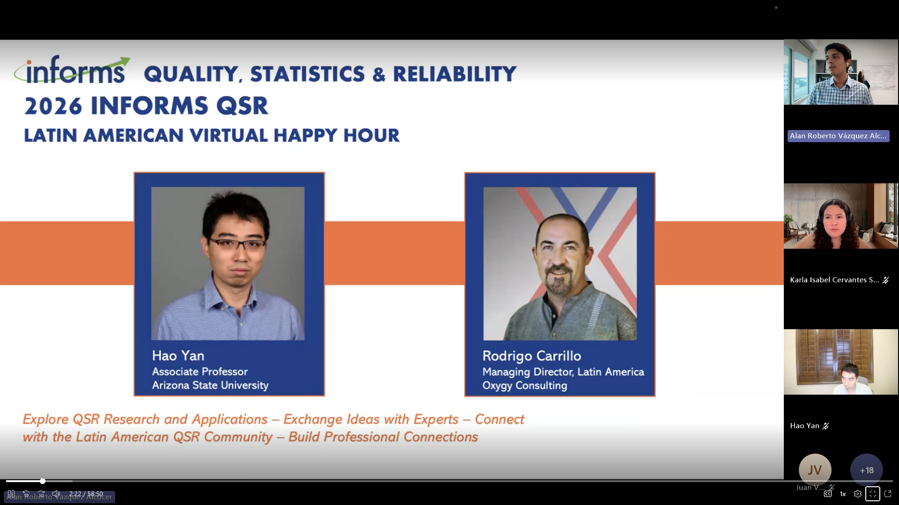

From the Chair
Dear fellow QSR members,
Thank you for your continued support of the INFORMS QSR Section. Your dedication and expertise continue to make a lasting impact on our community. We have many exciting updates to share in this year’s newsletter.
First, I am delighted to highlight the QSR Cluster at the upcoming INFORMS Annual Meeting in San Francisco. Under the leadership of our cluster chair, Peter Liu, the cluster features 33 sessions and several special sessions, including the Best Refereed Paper, Best Student Paper, and Best Student Poster competitions. Finalists for the paper competitions have been announced on INFORMS Connect. We will also host the QSR Student Introduction and Interaction Session, and a panel with the Data Mining Society for new and prospective faculty in data science. Please join us at the QSR Business Meeting on Monday, November 2.
Beyond the Annual Meeting, this newsletter covers the activities the QSR Council has organized over the past year, including conferences, webinars and tutorials, industry engagement, newsletters, and fundraising. A few highlights:
- ICQSR 2026. The 4th INFORMS Conference on Quality, Statistics, and Reliability was relocated at short notice from Shanghai to Hong Kong. Thanks to the swift support of the Department of Data Science at City University of Hong Kong, it was successfully hosted on the CityUHK campus on July 5–9, 2026. In gratitude, the Council awarded CityUHK a Gold-tier sponsorship, and I thank Jian Liu and the organizing team for their work.
- Membership. Complimentary memberships for sponsors, industry panelists, and ICQSR participants, along with outreach to faculty and their PhD students, are helping broaden our community. This year, we have finally achieved 500 members, the threshold for transitioning QSR from an INFORMS Section to an INFORMS Society, which is the big milestone for us this year. We will work towards the application with INFORMS.
- Student Growth Programs. Our funding program for INFORMS Student Chapters continues to support QSR-related activities, and Council members have connected with chapters, including a QSR introduction at a University of Houston chapter event.
- Recognition & Awards. We offered the QSR Teaching Award again and introduced the new QSR Industry Service Award, honoring outstanding service from our industry partners. Winners will be recognized at the Business Meeting alongside our long-standing student and research awards.
- Education & Outreach. The QSR Tutorial Series and our webinar series continue to bring leading researchers to the community, with four webinars this year. We also launched the first QSR Latin American Happy Hour in October to build regional connections and extend QSR’s international reach.
- QSR Interactive Newsletter and LinkedIn. This newsletter is part of our new interactive newsletter series, led by our public relations and social media committees. Our LinkedIn page, which now has over 1,700 followers, remains a hub for member highlights, achievements, and opportunities.
Finally, I thank all of our sponsors, Advisory Board members, committee members, and volunteers for their ongoing involvement and contributions. Together, we will continue advancing the mission of the QSR Section and shaping the future of quality, statistics, and reliability.
INFORMS 2026 QSR Business Meeting
Join fellow QSR members for the Section’s annual business meeting during the INFORMS Community Business Meetings & Receptions in San Francisco. Competition winners and award recipients will be recognized at the meeting.
INFORMS Annual Meeting 2026 Preview
QSR returns to the INFORMS Annual Meeting this fall in San Francisco, where more than 6,000 members, students, and practitioners will gather around the theme Smarter Decisions for a Better World.
Basic conference information
Cluster chair: Dr. Jia (Peter) Liu.
Special sessions
- Navigating Federal Funding (QSR-led)
- INFORMS 2026 Student Introduction and Interaction Session (QSR-led)
- Thriving in Industry: Leveraging AI and Analytics for Career Success (DM-led)
- Starting an Academic Career for New and Prospective Faculty in Data Science (DM-led)
Journal-sponsored sessions
- IISE Transactions: Editorial Perspectives and Open Discussion
- Invited Session of Feature Articles – IISE Transactions on Healthcare Systems Engineering (QSR-led)
- INFORMS Journal on Data Science (IJDS) Featured Session (QSR-led)
- Technometrics Featured Session (QSR-led)
Competitions and awards
- Best Refereed Paper Competition
- Best Student Paper Competition
- Best Student Poster Competition
- QSR Teaching Award and QSR Industry Service Award
QSR Student Introduction & Interaction
One of QSR’s signature events, this session brings PhD students into the spotlight: each student delivers a short elevator talk about their research, then connects with senior QSR members, junior faculty, and industry guests who share advice on academic and industry careers.
[Date, time, room, and panelists — pending]
Session co-chairs
gwei@iastate.edu
huan2305@purdue.edu
alanrvazquez@tec.mx
INFORMS 2026 Competitions
As in previous years, the QSR Section hosts a full slate of competitions and awards at the Annual Meeting. Winners will be announced at the QSR Business Meeting.
QSR Best Paper Competition
Formerly the QSR Best Refereed Paper Competition · Co-chairs: Xiaochen Xian (Georgia Institute of Technology), Yinan Wang (Rensselaer Polytechnic Institute), Shancong Mou (University of Minnesota)
The competition recognizes excellence among the high-quality papers submitted to the QSR refereed sessions. Finalists were selected from a highly competitive pool: each submission underwent double-blind review and was independently evaluated and scored by a panel of reviewers. Finalists present in a special QSR session, and selected papers are eligible for a fast track at the INFORMS Journal on Data Science (IJDS).
Finalists
QSR Best Student Paper Competition
Co-chairs: Bo Shen (New Jersey Institute of Technology), Cesar Ruiz Torres (University of Oklahoma), Jianxin Xie (University of Virginia)
Finalists were selected from a highly competitive pool. Each submission underwent double-blind review and was independently scored by a panel of reviewers. The four finalists present at a special QSR session; all finalists receive an award certificate, and the winner also receives a plaque of recognition.
Finalists (alphabetical order by first author’s last name)
QSR Best Student Poster Competition
Co-chairs: Mahathir Mohammad Bappy (Louisiana State University), Chaoran Dou (University of Missouri), Syed Hasib Akhter Faruqui (Sam Houston State University)
Twenty-four students will present their research posters to a panel of judges, who will select the winner.
Monday, November 2, 2:45–4:00 PM · Moscone South, Exhibit Hall A (Exhibit Level)
QSR Industry Service Award
Committee: Alan R. Vázquez Alcocer (Tecnológico de Monterrey), Heeyoung Kim (KAIST), Mohammad Najjartabar Bisheh (Georgia Institute of Technology), Shashank Galla (Texas A&M University)
This award honors outstanding QSR members employed in industry or non-academic organizations who have significantly contributed to the community through service and engagement. The recipient will be announced at the QSR Business Meeting on Monday, November 2.
QSR Teaching Award
Committee: Bo Shen (New Jersey Institute of Technology), Dan Li (University of Washington), Sahand Hajifar (Park University)
This award recognizes excellence in teaching courses in quality, statistics, and reliability. The recipient will be announced at the QSR Business Meeting on Monday, November 2.
QSR-led Community Choice Sessions
Panels organized by QSR together with other societies, sections, and journals.
IISE Transactions: Editorial Perspectives and Open Discussion
This panel provides insights into IISE Transactions, the flagship journal of the Institute of Industrial and Systems Engineers. Panelists cover the journal’s scope and the distinctions among its four Focused Issues, discuss the peer-review process and emerging research trends, and offer practical guidance for preparing successful submissions. The session then moves to one-on-one office hours, where attendees can meet individually with the Focused Issue Editors and the Editor-in-Chief.
- ModeratorJudy Jin — Editor-in-Chief · University of Michigan
- PanelistKaibo Liu — Data Science, Quality and Reliability (DSQR) · University of Wisconsin–Madison
- PanelistZhenyu Kong — Design and Manufacturing (DM) · Virginia Tech
- PanelistSiqian Shen — Operations Engineering and Analytics (OEA) · University of Michigan
- PanelistJennifer Ryan — Supply Chain and Logistics (SCL) · Lehigh University
Navigating Federal Funding
This panel offers INFORMS members insights into the competitive landscape of data science research funding. It covers the funding priorities and program initiatives of major federal agencies such as NSF, DARPA, and DOE, with practical advice on crafting compelling proposals, understanding review processes, and aligning research agendas with national priorities.
- ModeratorMohammad Bisheh — Georgia Institute of Technology
- ModeratorImtiaz Ahmed — West Virginia University
- PanelistNathaniel Bastian
INFORMS Journal on Data Science (IJDS) Featured Session
- ModeratorJia Liu — University of Florida
- PanelistYu Ding — Georgia Institute of Technology
- PanelistGonen Singer — Bar-Ilan University
- PanelistDavid Levin — Bar-Ilan University
- PanelistCan Li — Purdue University
ICQSR 2026 Summary
This year, the QSR Section organized the 4th INFORMS Conference on Quality, Statistics, and Reliability (ICQSR), hosted by City University of Hong Kong, July 5–9, 2026. The conference theme was AI for Quality & Reliability.

The program opened on Sunday, July 5 with a Data Challenge workshop and lab tours, followed by four days of plenary talks, a distinguished lecture, a Leaders Forum, the Best Paper Competition, the Future Faculty Colloquium, and parallel technical sessions. Journal-featured sessions included the INFORMS Journal on Data Science, ENBIS, Technometrics, and IISE Transactions. Participants also joined a banquet aboard the Harbour Cruise Bauhinia, a networking reception on campus, and tours of CityU’s College of Computing and Embodied AI labs.
Plenary talks and distinguished lecture

AI Enabled Quality Improvement in Smart Manufacturing

From Manufacturing to Valufacturing: Implications for QSR

AI and Data Driven Smart Energy Systems – Management, Challenges and Opportunities

AI with HKPC, You can
Best Paper Award Finalists
Four finalists presented in the Best Paper Session (July 6–9). Competition committee: Heeyoung Kim (Chair, KAIST), Hui Wang (FAMU–FSU), Xiao Liu (Georgia Tech), Zhisheng Ye (NUS).
- ShapeFlow: Stochastic Neural Dynamics for Multi-Future 3D Prediction
Nick Nachtmann, Michael Biehler · University of Wisconsin–Madison - Sparse Bandit for Quickest Change Detection in Partially Observed Functional Data
Peiyao Liu, Nan Chen · National University of Singapore - Feature-Space-Regularized Personalized Federated Learning via Prototypical Distribution
Rui Zhou, Yanting Li, Fugee Tsung, Zhijun Wang · Shanghai Jiao Tong University; HKUST / HKUST (Guangzhou) - ResCloud: Reference-based Modeling and Predictive Reconstruction of Temporal 3D Point Cloud Profiles
Yichen Ma, Michael Biehler, Chiehyeon Lim, Jianjun Shi · Georgia Tech; University of Wisconsin–Madison; UNIST
Data Challenge Results
Finalist teams ranked by precision. Full results →
| Rank | Team | Members | Affiliation |
|---|---|---|---|
| 1 | Optiflow | Yilei Guo, Jianing Yang, Yulin Chen | Peking University; Tianjin University |
| 2 | Intelligent Manufacturing and Quality Engineering Laboratory | Longjun Zhang, Xiang Yang, Yinuo Zhou | City University of Hong Kong; USTC |
| 3 | WT_Challenge | Yichun Wang | Tsinghua University |
| 4 | Bingo | Hao Zhan, Yuxuan Li | East China University of Science and Technology; Tiangong University |
| 5 | Everpurple | Jeongwoo Yoo | UNIST, Republic of Korea |
| 6 | Elegance | Kaizong Bai, Zhuanqin Liu | Dongbei University of Finance and Economics |
Organizers
ICQSR 2026 was chaired by Jianjun Shi (Georgia Institute of Technology) and Jianping Wang (City University of Hong Kong), with honorary chairs C. F. Jeff Wu (Chinese University of Hong Kong, Shenzhen) and Lixin Tang (Northeastern University). The Organization Committee was co-chaired by Ershun Pan (Shanghai Jiao Tong University), Jian Liu (University of Arizona), and Zijun Zhang (City University of Hong Kong); the Program Committee by Sukjoo Bae (Hanyang University), Jian Liu, Xi Zhang (Peking University), and Zijun Zhang. We thank the committees, local arrangement team, and many volunteers who made the event possible.
QSR Subcommittee for 2026
QSR’s subcommittees organize, manage, and share the initiatives that keep our Section one of the most active in INFORMS.
QSR Conference Subcommittee
[Mission statement, chair, and members — pending]
QSR Fundraising Subcommittee
To develop and execute QSR’s fundraising strategies, including identifying key funding sources, securing sponsors, and building lasting partnerships.
- Dr. Xiaochen Xian — Georgia Institute of Technology
- Dr. Ana Maria Estrada Gómez Purdue University
- Dr. Cheng-Bang Chen University of Miami
- Dr. Trung Le University of South Florida
- Dr. Yifu Li University of Oklahoma
- Dr. Yinan Wang Rensselaer Polytechnic Institute
- Dr. Yuhao Zhong Virginia Tech
- Mariafrancesca Patalano Georgia Institute of Technology
- Janaki Panneerselvam Auburn University
QSR Membership Growth Subcommittee
To propose strategies for QSR membership growth, identify key areas of improvement and execute plans aligned with those strategies, stimulate industry–academia collaborations, and increase the visibility and impact of the QSR Section in industry.
- Dr. Jia “Peter” Liu — University of Florida
- Dr. Alan R. Vázquez — Tecnológico de Monterrey
QSR Academic Subcommittee
To serve and promote the academic activities of the QSR community within and beyond INFORMS.
- Dr. Bo Shen — New Jersey Institute of Technology
- Dr. Chao Wang — University of Iowa
QSR Public Communication and Outreach Subcommittee
To promote communication within the INFORMS QSR Section and its visibility to industry, academia, and beyond.
- Dr. Ahmed Aziz Ezzat — Rutgers University
- Dr. Ashif Iquebal — Arizona State University
Other QSR Activities
First INFORMS QSR Latin American Happy Hour

The Latin American Happy Hour is a new virtual event designed to bring together the QSR community in Latin America and beyond for technical exchange, conversation, and networking. The first edition took place online on October 16, 2026 and featured Prof. Hao Yan (Arizona State University) and Dr. Rodrigo Carrillo (Oxygy Consulting).
More than 25 attendees listened to the speakers’ talks and joined a mixer, where they got to know each other and shared ideas about QSR. We look forward to hosting happy hours with other communities in the future.
QSR Webinars
The QSR Webinar Series brings research talks by QSR members to the wider community. Recordings of past webinars are available on the QSR YouTube channel.
INFORMS Student Chapter Funding
QSR supports INFORMS Student Chapters in organizing QSR-related activities. This year, the following chapters each received $300:
- INFORMS Student Chapter at the University of Houston
- INFORMS Student Chapter at the University of South Florida
Program contact: Dr. Minhee Kim (mkim@ise.ufl.edu).
Calls for Papers & Events
Open special issues and special series relevant to the QSR community.
INFORMS Journal on Data Science (IJDS)
IISE Transactions
Members Update
Congratulations to the QSR members below on their recent honors, degrees, new positions, and grants. Updates were collected through the QSR Member Update form.
Honors and Awards Received
Ph.D. Degrees Earned and Promotions
Grants Received
Job Openings
Faculty openings in industrial & systems engineering and related areas, compiled from the IISE faculty mailing list (Sept–Oct 2026). Please follow each link for full details and deadlines.
- Arizona State University School of Computing and Augmented Intelligence (SCAI) — AI for Infrastructure & Supply Chain Resilience; Quantum Computing & Information Sciences · Tenured / Tenure-track, all ranks · Due Oct 29 AI & Supply Chain → · Quantum →
- Auburn University Industrial & Systems Engineering · Tenure-track, open rank · Review from Nov 9 Apply →
- Bucknell University Freeman College of Management (Analytics & Operations) — Business Analytics · Professional-track (non-tenure), open rank · Review from Nov 5 Apply →
- Cal Poly Pomona Industrial & Manufacturing Engineering — Human-System Integration · Tenure-track, Assistant Professor · First consideration Oct 1 Apply →
- Georgia Institute of Technology H. Milton Stewart School of ISyE — multiple positions, all research areas · Tenure-track, all ranks · Due Oct 31 Apply →
- KAIST Industrial & Systems Engineering — Physical AI & Intelligent Manufacturing; Discrete Optimization (2 positions) · Tenure-track, open rank · Due Nov 30 Contact →
- Lehigh University Industrial & Systems Engineering — OR, applied probability/statistics, data science & ML · Tenure-track, Assistant Professor · Full consideration Dec 15 Apply →
- Methodist University Department of Engineering — Industrial & Systems Engineering · Tenure-track, Assistant/Associate Apply →
- Mississippi State University Industrial & Systems Engineering · Tenure-track, open rank · Screening from Oct 15 Apply →
- NC State University Fitts Dept. of Industrial & Systems Engineering — Optimization (AI/quantum), Logistics & Supply Chain, Data Science · Tenured / Tenure-track, open rank Apply →
- Purdue University Edwardson School of Industrial Engineering — Intelligent Production & Supply Chain / Human Factors in Healthcare; Engineering Practice (West Lafayette & Indianapolis) · Assistant–Full Details →
- Texas A&M University Industrial & Systems Engineering — Data Science & Engineering; Human Factors & Ergonomics (2 positions) · Tenure-track, Assistant/Associate · Review from Nov 1 Apply →
- Texas A&M University Engineering Technology & Industrial Distribution (ETID) — 2 tenure-track Assistant Professors (MMET, MXET) and 2 Academic Professional (non-tenure) positions MMET → · MXET → · IDIS (AP) → · MMET (AP) →
- Texas Tech University Industrial, Manufacturing & Systems Engineering — 2 Assistant Professors; 1 Professor of Practice
- University of Alabama Mechanical Engineering (ISE/OR focus) — Assistant, Associate, Full Professor · Tenure-track Asst → · Assoc → · Full →
- University of Houston Industrial & Systems Engineering — 2 Endowed Professors; tenure-track in Human Factors, AI/ML, Advanced Manufacturing, Presidential Frontier Faculty (AI-enabled manufacturing); non-tenure Supply Chain & Logistics Technology · INFORMS interview deadline Oct 23 Apply →
- University of Missouri Industrial & Systems Engineering — Quantum Optimization · Assistant Professor · Review from Nov 16 Apply (Job ID 61104) →
- UNC Charlotte Industrial & Systems Engineering — OR, ML, data analytics, systems engineering · Tenure-track, Assistant Professor · Review from Nov 16 Contact →
- University of Southern California Epstein Dept. of Industrial & Systems Engineering · Tenured / Tenure-track, all ranks · Full consideration Dec 1 Apply →
- University of Tennessee, Knoxville Industrial & Systems Engineering — 3 tenure-track Assistant Professors; 2 Research Assistant Professors (non-tenure) Details →
- Virginia Tech Grado Dept. of ISE — Stochastic Operations Research · Tenure-track, Assistant Professor · Review from Nov 16 Apply (Posting 537780) →
Hiring a faculty member? Send your posting to the QSR newsletter team to be included in future editions.
Appreciation of the QSR Advisory Board
The QSR Advisory Board, currently consisting of 16 senior leaders in Quality, Statistics, and Reliability, has contributed strongly to the development of the QSR Section and continues to support its improvement.
Dr. Elsayed A. Elsayed of Rutgers University serves as chair of the board for 2020–2026. The board oversees the operation of QSR, advises on its activities, and supports the QSR officers in running the Section effectively and efficiently.
Under the QSR By-Law, advisory board members, including the chair, serve six-year terms. Former members may be re-invited by the chair, and as many as one-third of the board can be newly appointed each year.
Dr. Vijay Nair has retired from the board, and we welcome Dr. Lijuan Xu (Senior Staff Data Scientist and Manager, Google) as a new member. We thank all board members for their sincere advice and support of the QSR community, and we look forward to working with them in the years ahead.
QSR Executive Officers (2025–2026)
A snapshot of the people steering the QSR Section.
Arizona State University

University of Florida

University at Buffalo

Rutgers University
Tecnológico de Monterrey
New Jersey Institute of Technology
University of Washington

KAIST

University of Florida
Roster carried forward from the QSR Officers & Leadership page (connect.informs.org/qsr/officers) — to be re-confirmed for Fall 2026, as this page appears not to reflect recent INFORMS platform updates.
QSR Advisory Board
Senior leaders from academia and industry who advise the QSR Section.
- Dr. Shan Ba LinkedIn
- Dr. William Brenneman The Procter & Gamble Company
- Dr. Bianca Maria Colosimo Politecnico di Milano
- Dr. Brian Denton University of Michigan
- Dr. Allison Jones-Farmer Miami University
- Dr. Qiang Huang University of Southern California
- Dr. Ron S. Kenett KPA Group
- Dr. Jionghua (Judy) Jin University of Michigan
- Dr. Jingshan Li Tsinghua University
- Dr. Peter Parker NASA Langley Research Center
- Dr. Edwin Romeijn Georgia Institute of Technology
- Dr. Cole Smith Clemson University
- Dr. Frank Sun Tesla
- Dr. Kwok-Leung Tsui Virginia Tech
- Dr. Lijuan Xu New member Senior Staff Data Scientist and Manager, Google
Dr. Vijay Nair
Acknowledgements
We would like to thank all our sponsors for their generous support of QSR events.
Department Sponsors — Silver
$1,500Department Sponsors — Bronze
$500Individual Sponsors — Bronze
$500Stay connected
The QSR Section maintains active channels for member engagement, member spotlights, webinar announcements, and community news. Scan a code or follow a link to join in.